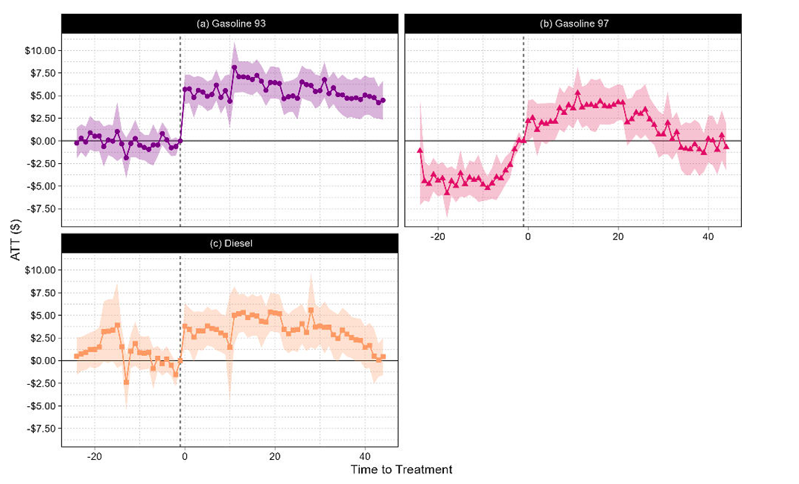
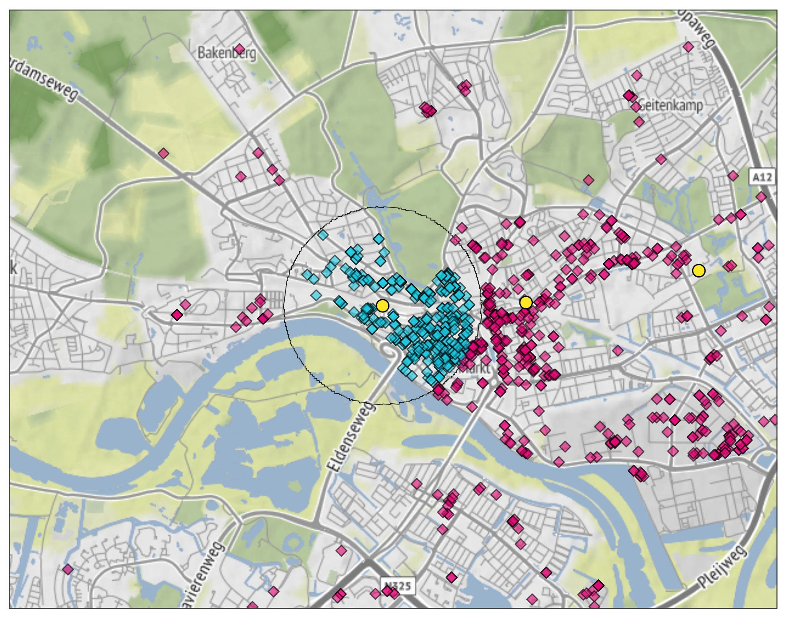
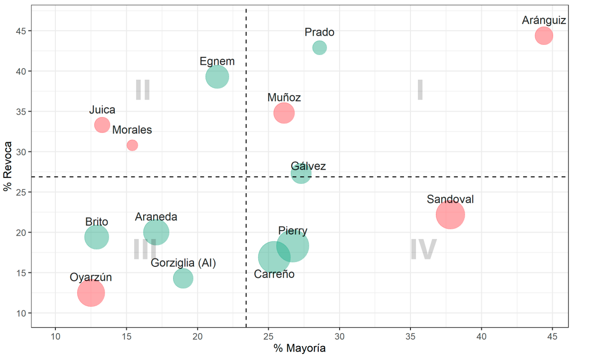

Published analysis evaluating the competitive effects of a retail gasoline merger in Chile using difference-in-differences and spatial econometrics.

Master thesis. Econometric analysis using difference-in-differences to assess the causal impact of transit infrastructure on commercial real estate values in the Netherlands.

Published article analyzing judicial voting behavior in competition law cases using statistical methods.